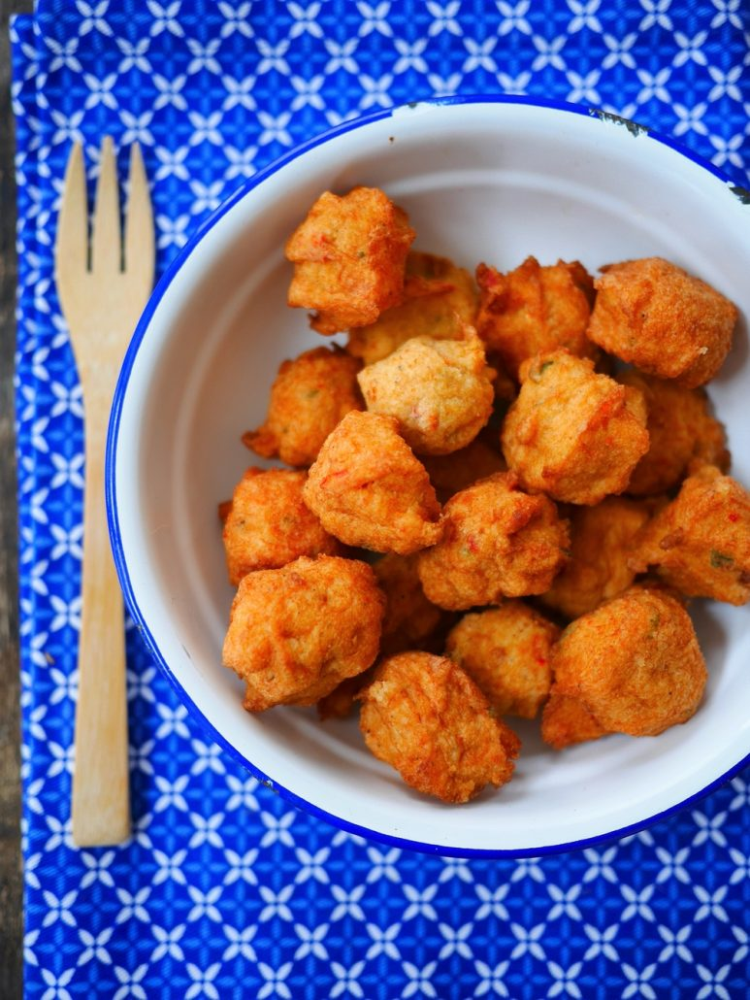

Cod FrittersAccras de Morue
| PortionsPortions | PreparationPréparation | Cooking timeTemps de cuisson |
|---|---|---|
| 10 petits accras | 20 min | 10 min |

IngredientsIngrédients
- 100 gramme(s) flourfarine
- 1/2 teaspooncuillère à café saltde sel
- 1/2 packetsachet baking powderlevure chimique
- 2 clovesgousses garlicd'Ail
- 1 shallotéchalotte
- 2 eggsoeufs
- 4 tablespoonscuillères à soupe olive oild'huile d'olive
- 1/2 bunchbouquet flat parsleyde persil plat
- 280 gramme(s) codde morue
- 7 centilitre(s) lemon juicede jus de citron
- pepperpoivre
StepsÉtapes
- Preheat oven to 240°Préchauffer le four à 240°
- Mix flour, salt, pepper and baking powder in a bowlMélangez la farine, le sel, le poivre et la levure dans un saladier
- Add eggs, olive oil, chopped shallot, crushed garlic, chopped parsley, lemon juice and crumbled cod.Ajoutez les oeufs, l'huile d'olive, l'échalotte ciselée, l'ail écrasé, le persil haché, le jus de citron et le thon émiétté.
- Mix to get a homogeneous batterMélangez pour obtenir une pâte homogène
- Line a baking sheet with parchment paper then place small mounds the size of a walnutChémisez une plaque de cuisson de papier sulfurisé puis déposez des petits tas de la taille d'une noix
- Oil each fritter with a little olive oil and bake 10 minutes, watching carefullyHuilez chaque accras avec un peu d'huile d'olive et enfournez 10 minutes en surveillant bien
- Stop cooking when the fritters are goldenStoppez la cuisson quand les accras sont dorés
TricksAstuces
The disadvantage of non-fried recipesL'inconvénient des recettes sans friture, is that they have a drier result. So eat the fritters as soon as they come out of the oven, otherwise they will dry out as they cool.c'est qu'elles ont un rendu plus sec. Du coup mangez les accras dès la sortie du four, sinon ils vont sécher en refroidissant.